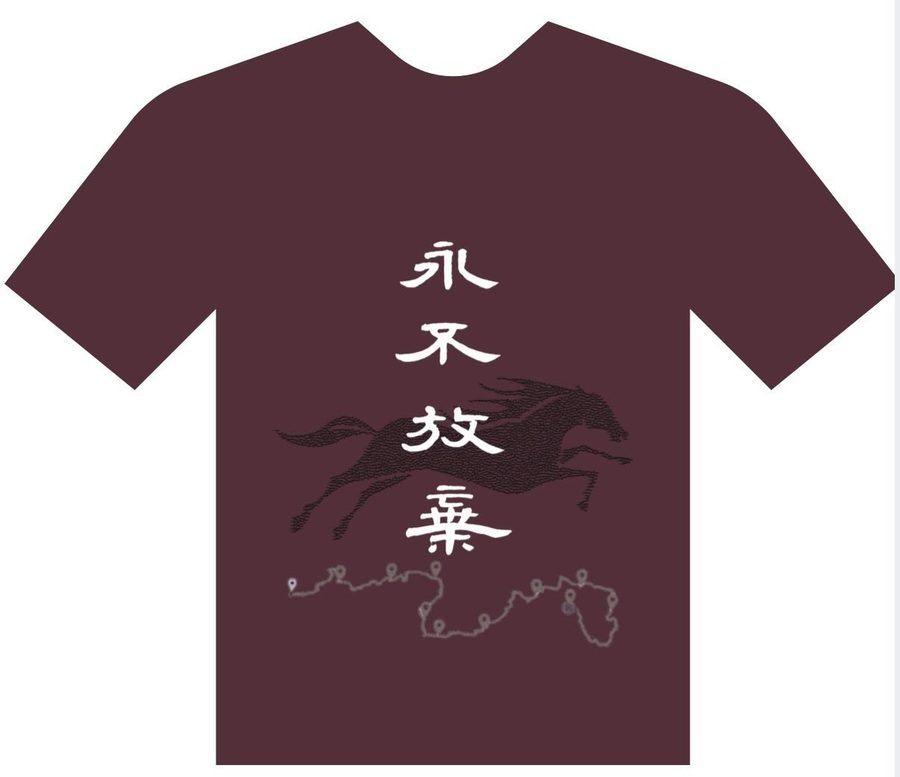
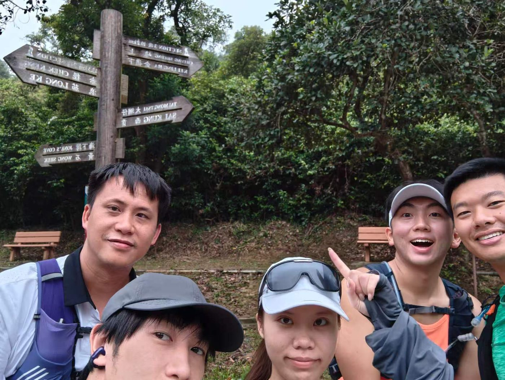

帶人、聆聽、凝聚
走在前頭，不是要逞強，是想磨練那帶人、聆聽、凝聚的本事。管理這回事，書房裡學不來，唯有風雨同路，才能見真章。
樂施會毅行者 2026 ｜ Oxfam Trailwalker
朽木猶可雕·歷練成君子
已完成 15%，尚餘 HK$34,000 達標
善款全數經樂施會官方渠道捐出，用於樂施會的扶貧、發展及緊急救援工作。
01 ｜ 我們為什麼要走
我們五人，來路各異，卻因同一條路而聚在一起。鍛鍊心性、強健體魄、磨練技藝、永不放棄 —— 這便是我們出發的理由。
走在前頭，不是要逞強，是想磨練那帶人、聆聽、凝聚的本事。管理這回事，書房裡學不來，唯有風雨同路，才能見真章。
已走過一回，本可安坐家中，卻甘願再走一遍。上回那份突破的滋味，讓他魂牽夢縈。這次，他想走得更深、磨得更透。
平常少行山，抱著最單純的心：山就在那裡，何必捨近求遠？
伙伴就在身邊。一趟山行，便是心靈最快樂的時光。
把這次活動當作人生重新出發的鑰匙。洗刷過去的種種，不是為了逃避，而是決心用一百公里的汗水，把舊的自己徹底走掉。
山高路遠，朽木成材，正在此行。
02 ｜ 隊伍的故事
朽木不雕，世之所棄；然天地之大德曰生，枯木逢春猶再發，癰疽潰瘍者乃成奇材。《莊子》有云：「樸雖小，天下莫能臣。」《論語》嘆「朽木不可雕也，糞土之牆不可杇也」，本是聖人警醒惰學之語。然而真英雄者，偏要與天爭這口氣。
朽木不可雕，乃世俗之論；
偏要雕之，是我輩之心。
我們這班人，不是天生的良材美木，起步或許笨拙、根器或許平凡，正如林中被棄置的枯株，無人問津、無人看好。然而百公里毅行之路，正是天降的試煉 —— 用腳步去磨、用汗水去浸、用堅持去熬，誓要將這塊腐朽之木，雕成撐天的棟樑。
「毅行者」三字，更見決心：山高路遠，風雨不改；夜深星稀，腳步不停。 旁人若笑我們不自量力，我們只管一步一步走下去 —— 因為唯有走完的人，才有資格說，木已成材。
朽木猶可雕 歷練成君子
此吾隊之名，亦吾隊之約
隊友們，讓我們就此出發。

03 ｜ 五位隊員
五個人，一百公里，必須同行同止。任何一人停下，隊伍就停下。

04 ｜ 立即捐助
你的每一分捐款，都會全數經樂施會官方渠道捐出，用於樂施會的扶貧、發展及緊急救援工作。 我們不經手任何款項。
建議金額
將於樂施會官方捐款頁完成捐款。捐款滿指定金額，將由樂施會發出正式收據，可作稅務扣除用途（以樂施會及稅務局規定為準）。
05 ｜ 善款去向
樂施會（Oxfam）於 1976 年在香港成立，是全球樂施會的成員之一，在香港及全球多地推行扶貧、發展及緊急救援工作。 毅行者的善款，用於支持樂施會這些長期而具體的工作。
支持小農、畜牧戶與基層社區改善生產技術與收入，讓貧窮家庭有能力靠自己站起來。
在地震、風災、衝突等災難發生時，提供食水、糧食、臨時居所與醫療支援。
推動政策改善與公眾教育，從制度層面處理貧窮的根源。
以上內容為樂施會工作範疇的一般描述，實際項目安排以樂施會官方公佈為準。
06 ｜ 一百公里路線
由西貢北潭涌出發，橫越麥理浩徑十段，終點落腳屯門。全程 100 公里，沿途設有 9 個檢查站，須於 30 小時內完成。
活動日（2026 年 11 月 20 – 21 日）我們會在本網站及 朽木 Instagram 更新各檢查站的通過時間，歡迎全程追蹤。
07 ｜ 訓練實錄
每一次上山，都是把這塊朽木再磨一次。以下是我們的訓練片段。
雙擊圖片可放大至原尺寸
相片準備中 —— 把相片放進網站資料夾的「照片」資料夾，再執行一次 update_photos.py 即可。
08 ｜ Support Team
沒有支援隊，一百公里就走不完。
雙擊圖片可放大至原尺寸
相片準備中 —— 把相片放進網站資料夾內的「support team」資料夾，再執行一次 update_photos.py 即可。
09 ｜ 常見問題
全部捐款均經樂施會官方渠道處理，用於樂施會的扶貧、發展及緊急救援工作。我們不經手任何款項，亦不會要求你把錢轉到任何個人戶口。
捐款滿指定金額，將由樂施會發出正式收據。實際門檻與安排以樂施會官方公佈為準。
樂施會是香港認可的免稅慈善機構，捐款一般可用作申請稅務扣除。詳情以樂施會及稅務局的規定為準，建議保留收據。
可以。在樂施會捐款頁填寫資料時選擇匿名或不填寫姓名即可，我們不會另外公開捐款人資料。
不少公司設有員工捐贈配對計劃，可以讓你的捐款翻倍。建議先向公司人力資源部查詢申請方式，我們樂意提供所需證明文件。
活動當日我們會在本網站及 朽木 Instagram 更新各檢查站的通過時間。你也可以先記下這個網站，隨時回來查看。
不是。本網站由朽木毅行者隊伍自發製作，僅作籌款與分享用途；所有捐款均透過樂施會官方渠道處理。